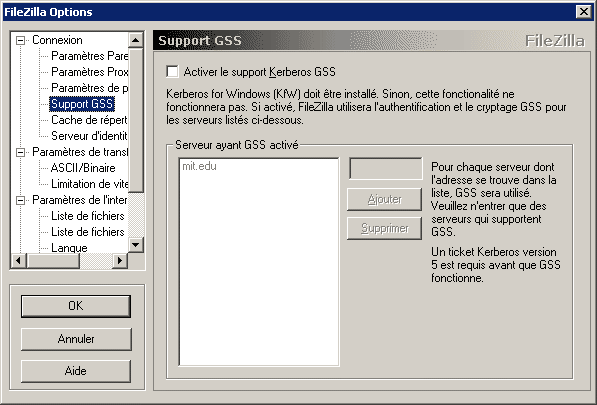

Support GSS
Vue d'ensemble:
FileZilla peut communiquer avec les serveurs FTP utilisant Kerberos avec GSS. Quand cette option est sélectionnée, toutes les données envoyées entre FileZilla et le serveur FTP seront cryptées. Cela signifie que les autres utilisateurs du réseau ne pourront pas dérober votre mot de passe ou vos données.
Pour utiliser cette fonction, vous devez vous assurer que:
le serveur FTP supporte GSS et Kerberos
vous possédez Kerberos pour Windows, installé sur votre ordinateur
vous avez obtenu 5 tickets Kerberos
Si ces conditions ne sont pas rassemblées, FileZilla vous proposera l'option d'envoyer toutes vos données en clair. Ne faites pas cela si votre mot de passe ou vos données doivent rester secrets!

Activation GSS:
Cochez Activer le support Kerberos GSS pour activer Kerberos GSS.
Serveurs ayant GSS activé:
Du fait que la plupart des serveurs ne supportent pas GSS, FileZilla ne l'utilise pas par défaut au cours de ses processus d'ouverture de session. Si vous souhaitez que FileZilla utilise GSS quand il se connecte à un serveur ou un ensemble de serveurs, vous devez les entrer dans le champ Serveurs ayant GSS activé. Vous pouvez entrer aussi bien le nom complet des serveurs que leur nom de domaine. Quand vous essayez de vous connecter à un serveur, FileZilla comparera le nom complet du serveur à la liste de ce champ. Si le nom du serveur se termine par une chaîne de la liste, GSS sera utilisé.
Par exemple, si la liste comporte "mit.edu", FileZilla utilisera GSS quand il se connecte à "mint-square.mit.edu" ou "athena.dialup.mit.edu", mais il n'utilisera pas GSS pour une connexion à ftp.microsoft.com.
Si la liste comporte "mint-square.mit.edu", FileZilla n'utilisera GSS que quand il se connectera à "mint-square.mit.edu".
Pour ajouter un serveur à la liste, entrez son nom dans le petit champ de texte et cliquez sur Ajouter.
Pour supprimer un serveur de la liste, cliquez sur son nom dans la liste et cliquez sur Supprimer.
FileZilla supporte aussi les alias. FileZilla ira résoudre automatiquement l'alias et le comparera au nom réel du serveur en faisant un rapprochement avec la liste. Par exemple si "athena.dialup" est un alias de "thena.dialup.mit.edu", et que vous vous connectez à "athena.dialup", FileZilla retrouvera l'adresse réelle, "athena.dialup.mit.edu" dans ce cas et fera un rapprochement avec la liste.